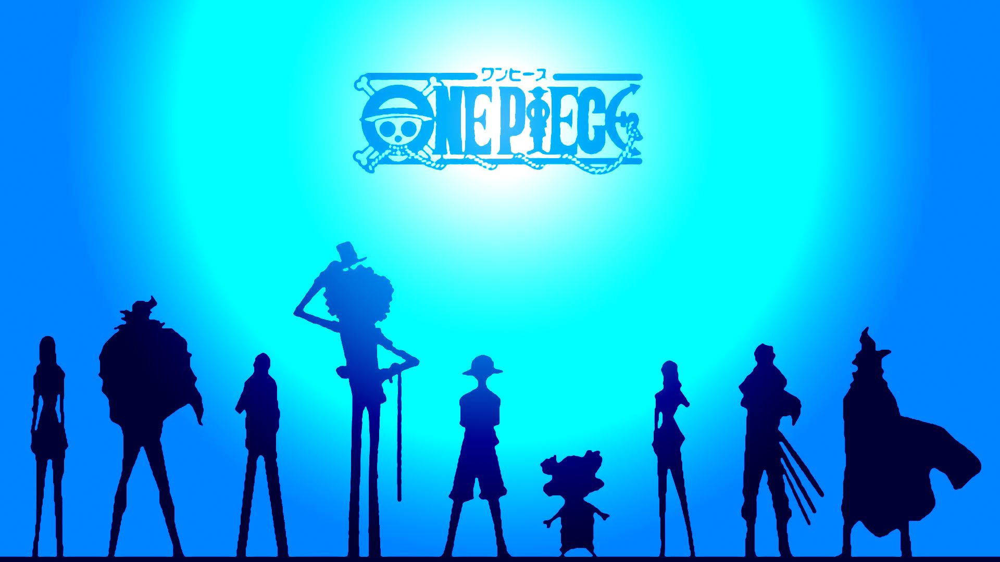
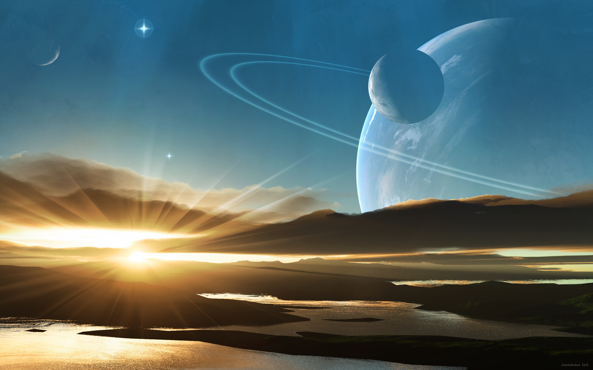
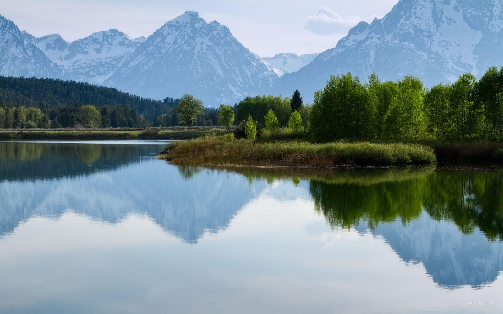
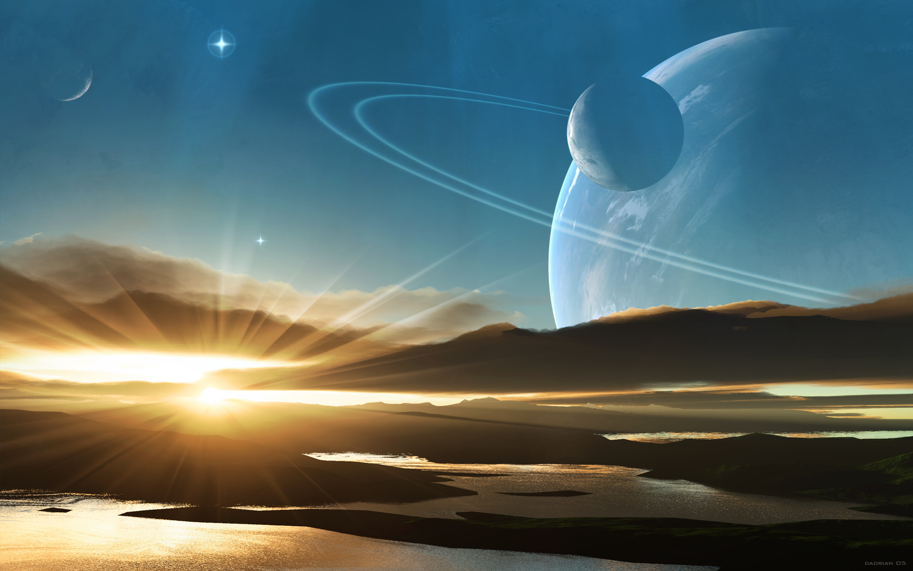
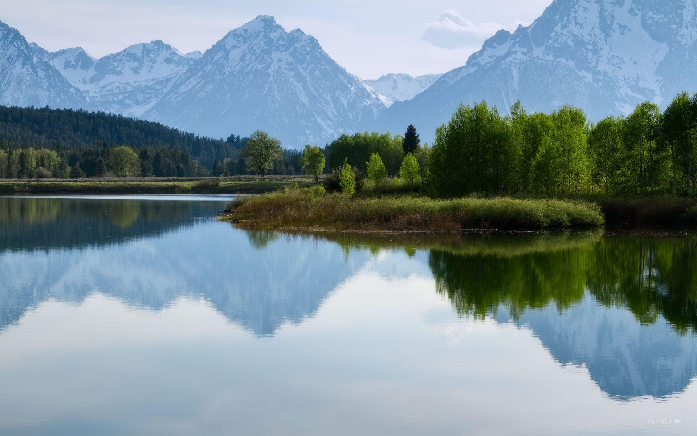
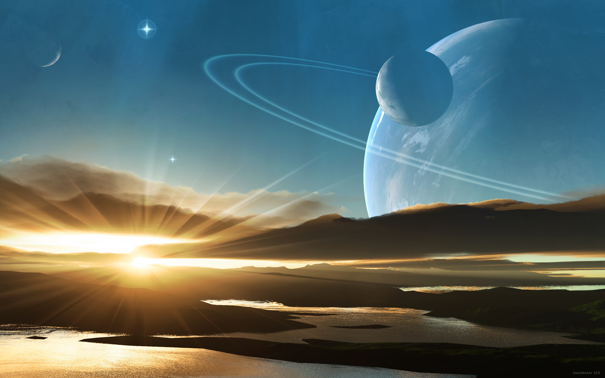
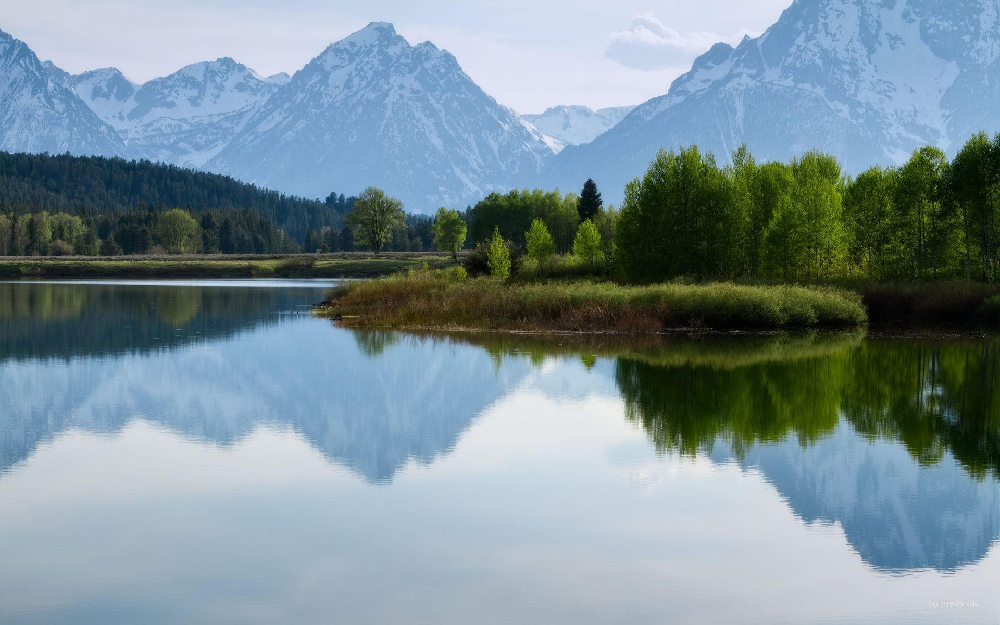

点击切换背景
html,body {
margin: 0;
height: 100%;
}
/*设置背景图片全屏显示，并且居中*/
img.bg {
width: 100%;
top: 0;
z-index:1;
}
/*设置背景图像不显示动画效果*/
@keyframes 'notTarget' {
0% { z-index: 75; }
100% { z-index: 75; }
}
.slider {
position: absolute;
width: 100%;
text-align: center;
z-index: 9999;
bottom: 400px;
}
.slider li {
display: inline-block;
width: 170px;
height: 130px;
margin-right: 15px;
}
.slider a {
display: inline-block;
width: 170px;
padding-top: 70px;
padding-bottom: 20px;
position: relative;
cursor: pointer;
border: 2px solid #fff;
border-radius: 5px;
vertical-align: top;
color: #fff;
text-decoration: none;
font-size: 22px;
font-family: 'Yesteryear', cursive;
text-shadow: -1px -1px 1px rgba(0, 0, 0, 0.8),-2px -2px 1px rgba(0, 0, 0, 0.3),-3px -3px 1px rgba(0, 0, 0, 0.3);
}
/*任务一、设置不同列表的背景色*/
.slider li:nth-of-type(1) a{
background-color: #02646e;
}
.slider li:nth-of-type(2) a{
background-color: #eb0837;
}
.slider li:nth-of-type(3) a{
background-color: #67b374;
}
.slider li:nth-of-type(4) a{
background-color: #e6674a;
}
.slider li:nth-of-type(5) a{
background-color: #e61061;
}
/*任务二、设置缩略图形状*/
.slider a::after{
content:"";
display: block;
height: 120px;
width: 120px;
border: 5px solid #fff;
border-radius: 50%;
position: absolute;
left: 50%;
margin-left: -60px;
z-index: 9999;
top: -80px;
}
/*任务三、设置缩略图背景图像*/
.slider li:nth-of-type(1) a::after{
background: url(../images/s1.jpg) no-repeat center;
}
.slider li:nth-of-type(2) a::after{
background: url(../images/s2.jpg) no-repeat center;
}
.slider li:nth-of-type(3) a::after{
background: url(../images/s3.jpg) no-repeat center;
}
.slider li:nth-of-type(4) a::after{
background: url(../images/s4.jpg) no-repeat center;
}
.slider li:nth-of-type(5) a::after{
background: url(../images/s5.jpg) no-repeat center;
}
/*任务四、给缩略图添加蒙板效果*/
.slider a::before{
content:"";
display: block;
height: 120px;
width: 120px;
border: 5px solid #fff;
border-radius: 50%;
position: absolute;
left: 50%;
margin-left: -60px;
z-index: 99999;
top: -80px;
background: rgba(0,0,0,0.3);
}
/*任务五、鼠标悬浮时，修改缩略图蒙板透明度*/
.slider a:hover::before{
opacity:0;
}
/*任务六、点击综略图，切换背景图*/
/*背景图从左向右出现*/
.slideLeft:target{
z-index: 100;
animation-name: slideLeft;
animation-duration: 1s;
animation-iteration-count: 1;
}
/*背景图从下向上出现*/
.slideBottom:target{
z-index: 100;
animation-name: slideBottom;
animation-duration: 1s;
animation-iteration-count: 1;
}
/*背景图由小到大出现*/
.zoomIn:target{
z-index: 100;
animation-name: zoomIn;
animation-duration: 1s;
animation-iteration-count: 1;
}
/*背景图由大到小出现*/
.zoomOut:target{
z-index: 100;
animation-name: zoomOut;
animation-duration: 1s;
animation-iteration-count: 1;
}
/*背景图旋转出现*/
.rotate:target{
z-index: 100;
animation-name: rotate;
animation-duration: 1s;
animation-iteration-count: 1;
}
/*任务七、设置不显示的背景图层级*/
/* Not Target */
.bg:not(:target) {
animation-name: notTarget;
animation-duration: 1s;
animation-iteration-count: 1;
}
点击的变换效果，不至于直接显示
/*任务一：设置背景图片从左向右移入显示的动画效果*/
@-webkit-keyframes 'slideLeft' {/*请填写具体的动画代码*/
from {
transform:translate3d(-100%,0,0);
}
}
@keyframes 'slideLeft' {/*请填写具体的动画代码*/
from {
transform:translate3d(-100%,0,0);
}
}
/*任务二：设置背景图像从底部向顶部移入的动画效果*/
@-webkit-keyframes 'slideBottom' {/*请填写具体的动画代码*/
from {
transform:translate3d(0,100%,0);
}
}
@keyframes 'slideBottom' {/*请填写具体的动画代码*/
from {
transform:translate3d(0,100%,0);
}
}
/*任务三：设置背景图片由小到大放大动画效果*/
@-webkit-keyframes 'zoomIn' {/*请填写具体的动画代码*/
from {
transform:scale(0);
}
}
@keyframes 'zoomIn' {/*请填写具体的动画代码*/
from {
transform:scale(0);
}
}
/*任务四：设置背景图像由大到小缩小动画效果*/
@-webkit-keyframes 'zoomOut' {/*请填写具体的动画代码*/
from {
transform:scale(2);
}
}
@keyframes 'zoomOut' {/*请填写具体的动画代码*/
from {
transform:scale(2);
}
}
/*任务五：背景图像旋转出现动画效果*/
@-webkit-keyframes 'rotate' {/*请填写具体的动画代码*/
from {
transform:rotate(180deg) scale(0);
}
}
@keyframes 'rotate' {/*请填写具体的动画代码*/
from {
transform:rotate(180deg) scale(0);
}
}
关键点是 :target 选择器的使用，基本上是很少使用，大多都是点击事件。 在这里就可以减少js的使用，优化项目。缺点是要固定屏幕全屏，不然要修改特效。

 




